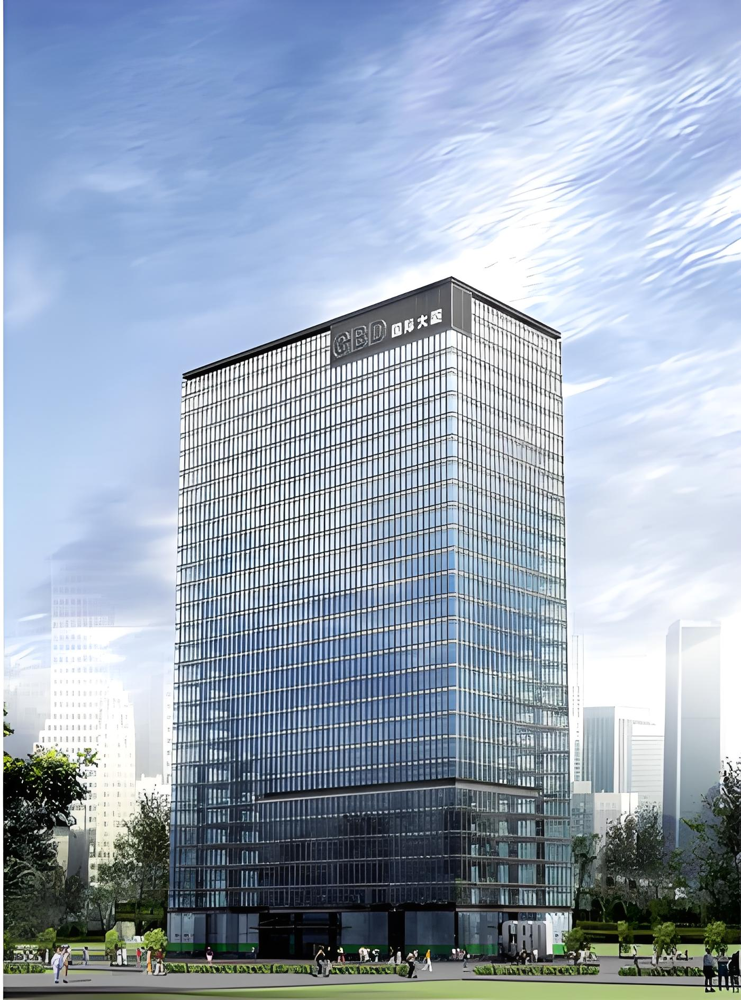
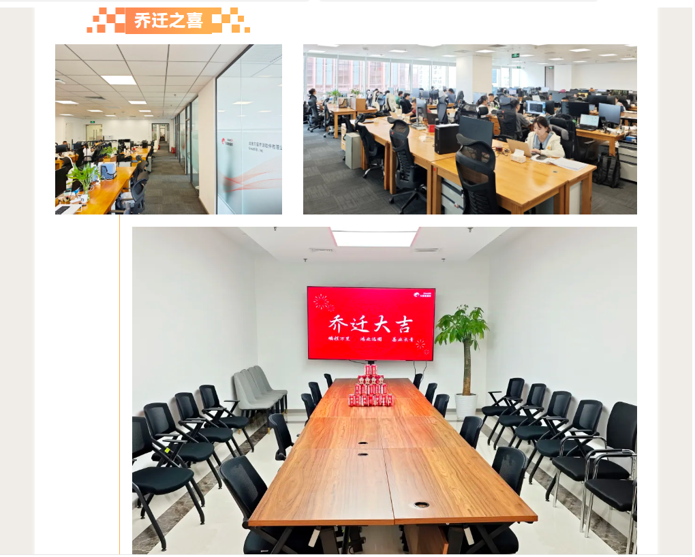

立足国贸新起点 智启数据新征程 | 万里数据库总部乔迁新址啦！
万里新程栖朝阳，凌云志启新华章！
2025年6月28日，国产数据库代表企业万里数据库迎来重要发展时刻——正式乔迁至北京市朝阳区CBD国际大厦7层701B。
此次乔迁并非简单的地址变迁，而是万里数据库在持续深耕朝阳国贸CBD核心区域基础上的又一次重要升级，标志着公司将以更加稳健而昂扬的姿态，开启扎根中国数字经济核心腹地、加速技术突破与生态构建的全新篇章。
立足核心 赋能未来
从国贸CBD到更现代办公空间的升级

万里数据库自2000年创立之初，25载不忘初心、牢记使命，扎根于首都北京CBD区域，这里是中国经济脉搏跳动最强劲的地方之一。
此次选择在CBD国际大厦开启新程，是在原有区位优势基础上的进一步优化与提升，有利于公司链接顶尖人才、资本与生态伙伴的能力，更深层次地融入国家科技创新体系的核心网络，为万里数据库未来的长远发展提供了更为强劲的平台支撑。
焕新环境 凝聚人心
构筑激发创新与效率的智慧空间
新办公空间的设计理念，充分体现了万里数据库“以人为本、科技驱动”的核心价值观。告别旧址，入驻CBD国际大厦，公司着力打造一个提升协作效率、激发创新潜能、增强员工归属感的现代化工作环境。
开放式协作区促进高效沟通与敏捷开发；精心规划的独立研发空间保障了技术攻关所需的深度思考与专注；智慧化的会议系统无缝连接各地团队，实现高效协同；周边完善的商业、生活及交通配套，显著提升了员工的通勤便利性与生活幸福感。
整体环境的提升，为这支国产数据库的中坚力量提供了坚实的后盾，让每一位万里人都能更安心、更高效、更富创造性地投入到打造世界级数据库产品的伟大事业之中。

“从国贸CBD到CBD国际大厦，我们始终在朝阳这片科技热土上深耕细作。新址的启用，不仅是物理空间的优化，更是万里数据库发展动能的一次重要跃迁。它承载着我们对技术自主创新的不懈追求，对员工价值的高度尊重，以及对服务国家数字经济发展战略的坚定承诺。” 万里数据库高层领导如是说。
智启万里 共赴新程
锚定国产数据库发展的星辰大海
当前，中国数字经济正以前所未有的速度蓬勃发展，“数据要素X”行动计划深入推进，关键行业信创替代迈向深水区，国产数据库迎来了从“可用”向“好用、愿用、必用”全面跃升的历史性机遇。
站在北京这一全球创新高地的新起点上，万里数据库将以此次乔迁为契机，进一步加大在分布式、AI融合、HTAP等前沿技术领域的研发投入，致力于打造更安全、更稳定、更智能、更易用的新一代国产数据库产品与解决方案。
同时，公司将更加积极地拥抱开放生态，深化与产业链上下游伙伴、高校及科研院所的紧密合作，共同构建繁荣共生的国产数据库生态圈，为中国数字经济的腾飞筑牢坚实可靠的数据基石。
从国贸CBD的深厚积淀，到CBD国际大厦的崭新启航，万里数据库的标识在新址熠熠生辉，不仅照亮了企业自身发展的新高度，更映射出中国基础软件产业蓬勃向上、锐意进取的壮阔图景。
未来已来，万里数据库将继续秉持初心，以创新为引擎，以实干为风帆，在中国乃至全球数据库的辽阔蓝海中破浪前行——万里腾骧志，扬帆正远航！